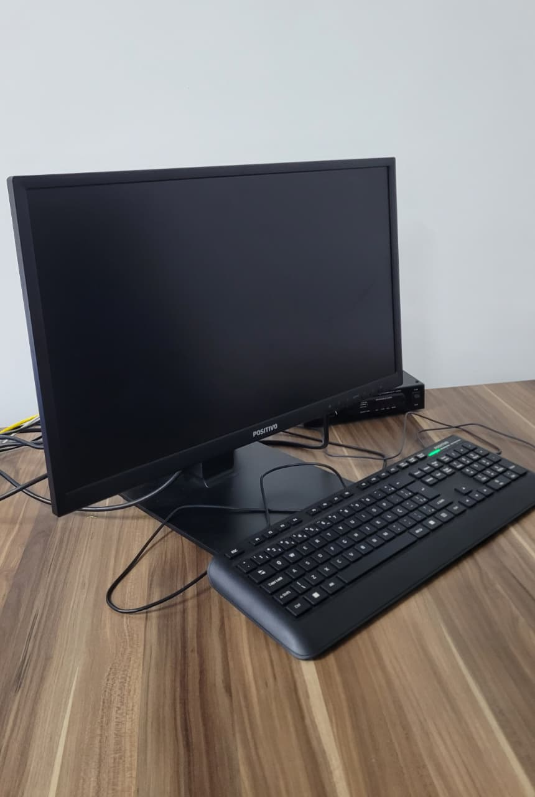

Computadores Administrativos OPERACIONAL
Categoria: Estações de trabalho para gestão do laboratório e apoio às aulasIdentificação Patrimonial
| Código Interno | PC001 a PC003 |
|---|---|
| Quantidade | 3 unidades |
| Endereço Físico | SLS – bancada docente do Laboratório de Sistemas Logísticos |
| Fornecedor | A confirmar |
Unidades identificadas:
1. Descrição e Finalidade
Os computadores administrativos são estações de trabalho de uso restrito ao professor, ao técnico e ao responsável pelo Laboratório de Logística. São utilizados no controle das atividades do laboratório, no acesso a sistemas institucionais, na elaboração de documentos, no gerenciamento dos arquivos do laboratório e na projeção de conteúdo durante as aulas, em conjunto com o Display Interativo (TVT001).
Diferentemente dos computadores de uso discente (PCE001 a PCE020), estas máquinas têm acesso a recursos restritos da rede institucional e não devem ser utilizadas por estudantes.

2. Especificações Técnicas
| Tipo | Computador desktop |
|---|---|
| Processador | Intel Core i5 / i7 ou equivalente |
| Memória RAM | 8 a 16 GB |
| Armazenamento | SSD |
| Sistema Operacional | Windows |
| Periféricos | Monitor, teclado e mouse USB |
| Conectividade | Rede cabeada institucional; saída HDMI para projeção |
3. Guia Rápido de Operação
Checklist pré-uso:
- Verificar se monitor, teclado e mouse estão conectados;
- Caso haja projeção, conferir a conexão do cabo HDMI com o Display Interativo (TVT001) antes de iniciar a aula;
- Confirmar que nenhuma sessão de outro usuário ficou aberta.
Cuidados:
- Não compartilhar senhas nem deixar a sessão aberta durante atividades com estudantes;
- Bloquear a tela (tecla Windows + L) sempre que se afastar da bancada;
- Instalar softwares somente mediante solicitação à TI do campus;
- Não conectar dispositivos USB de origem desconhecida.
Passo a passo:
- Ligar: acionar o botão do gabinete e o monitor; aguardar a tela de login.
- Acessar: entrar com as credenciais de docente ou técnico.
- Projetar (se necessário): selecionar a entrada HDMI 1 no Display Interativo e ajustar o modo de exibição (duplicar ou estender).
- Desenvolver a atividade: utilizar os sistemas e documentos necessários.
- Encerrar: salvar e fechar os arquivos, sair da conta e desligar pelo menu Iniciar → Desligar.
4. Normas de Segurança e Cuidados
EPIs necessários: não se aplica.
Quem pode operar: professor, técnico de laboratório e responsável pelo laboratório.
Restrições: uso proibido por estudantes; configurações de rede e de políticas de acesso são de responsabilidade da TI do campus.
Treinamento necessário:
- ☑️ Nenhum
- 🔲 Básico
- 🔲 Intermediário
- 🔲 Operação exclusiva do técnico
5. Manutenção e Conservação
Limpeza: com o equipamento desligado, limpar monitor, teclado e mouse com pano de microfibra seco ou levemente umedecido com álcool isopropílico.
Ventilação e cabos: manter as saídas de ar desobstruídas e verificar o estado dos cabos de energia, rede e HDMI.
Cópias de segurança: manter os arquivos do laboratório em pasta de rede ou nuvem institucional, nunca apenas no disco local.
Procedimento em caso de falha: verificar as conexões físicas, registrar a ocorrência com o código da máquina (PC00x), abrir chamado na TI do campus e anotar o número do chamado no controle do laboratório.
6. Checklist Pós-Uso
Antes de deixar o equipamento, verifique:
- Documentos salvos e programas encerrados;
- Sessão de usuário finalizada;
- Computador desligado pelo menu Iniciar e monitor apagado;
- Cabo HDMI desconectado ou organizado, se utilizado;
- Nenhuma mídia removível deixada conectada;
- Ocorrências registradas no controle do laboratório.